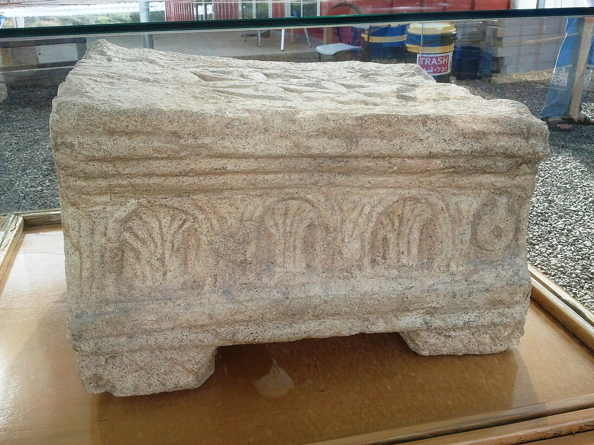

Magdala Stone

- Find Name
- Magdala Stone
- Historical Period
- Roman
- Artifact Date
- 1st century AD
- Date Discovered
- 2009
- Discovery Location
- Magdala (Migdal), Galilee, Israel
- Current Location
- On site at Magdala, Galilee
- Timeline Era
- Life of Christ
- Description
- A carved limestone block found in 2009 in the synagogue at Magdala, the hometown of Mary Magdalene. Its faces show the seven-branched menorah, a chariot-like structure, and rosettes — the earliest known stone depiction of the Second Temple and its furnishings, carved while the Temple still stood.
- Biblical Significance
- Jesus taught in synagogues throughout Galilee, and here is one of them, with its worship carved in stone: the menorah, the Temple it pointed to, the faith of a fishing town. The stone lets us see the world Jesus preached in — not a backdrop, but a place with its own synagogue, its own hopes, and its own people.
- Evidence Class
- Contextual
- Interpretations
- Scholars agree the stone is a first-century synagogue carving with Temple imagery; debate concerns the details of its iconography — which Temple vessels each face shows.
- Scripture Illuminated
- Related People
- Related Books
Awaiting Review Not yet checked against scholarly sources. Treat its claims as provisional until this entry is reviewed. About verification
Last reviewed: not yet reviewed